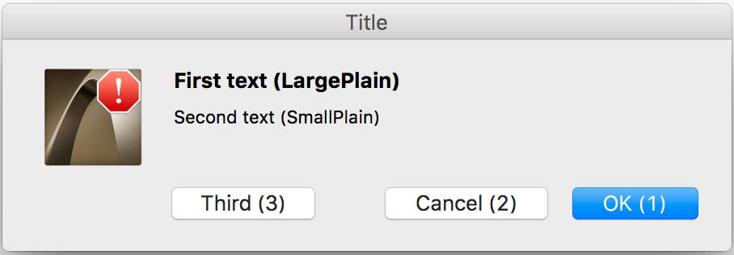

Alerts
An application can use alerts in DG to show an error, warning or information message to the user. An alert can contain an icon, two text fields and up to three buttons. Some of these items can be missing, but at least one text field and one button must exist.
You can invoke an alert by the DGAlert, DGResAlert and DGResAlertParam functions. These functions are similar to each other. The only difference is in the way how the icon and the alert and button texts are specified. Using DGAlert the application has to define all elements of the alert in run time as the function's parameters. DGResAlert gets alert data from GALR resources. With DGResAlertParam the content of the alert can be specified partly in GRC, partly in run time.
Perhaps the most important feature of DG alerts is that they are sized automatically to the minimal size that contains all of the given elements. If the first and/or the second alert text does not fit into one line, DG automatically breaks it/them into more lines. Of course, these texts can contain explicit line breaks as well. The default layout of DG alerts are demonstrated on the pictures below.
-

GRC Specification
'GALR' resID iconID ["title"] {
"largeText" (\)
"smallText" (\)
"button1"
"button2"
"button3"
}
where resID is the resource ID of the alert, iconID is the alert's icon resource ID. The optional title parameter defines the title of the alert. largeText and smallText are texts of the first and second text fields of the alert. Using backslash (\) characters at the end of the lines, these strings can be written in more than one line. button1, button2 and button3 are the button texts.
Remarks
DGResAlert and DGResAlertParam use the same GRC specification. The only difference is that the largeText and smallText can contain up to four "%s" format specifiers in GALR resources for DGResAlertParam. Before displaying the alert, these format specifiers are substituted with the paramText1, paramText2, paramText3 and paramText4 parameters of DGResAlertParam in the order of their appearance.
If the iconID parameter of DGAlert or GALR resource is a valid icon resource ID, the alert displays the custom color icon loaded from resource. However, if this parameter is one of the following special constants, it determines not only the alert icon but the type and the title of the alert as well.
-
iconID Alert type Meaning Macintosh icon Windows icon Error DG_ERROR Stop on Macintosh; Error on Windows. 
Information DG_INFORMATION Note on Macintosh; Information on Windows. 

Warning DG_WARNING Caution on Macintosh; Warning on Windows. 
If the titleText parameter of DGAlert is nullptr or the optional title parameter is omitted in the GALR resource, the alert has no title on Macintosh and DG uses the appropriate standard alert title given in DGInit on Windows.
Texts of the first and second text fields are drawn using the large plain and small plain fonts, respectively. If largeText or smallText parameter of DGAlert is nullptr or the corresponding string is empty ("") in the GALR resource, there is no first or second text field in the alert. Note however, that both text fields should not be missing from the alert.
If button1Text, button2Text or button3Text parameter of DGAlert is nullptr or the button1, button2 or button3 string is empty ("") in the GALR resource, there is no first, second or third button, respectively. Note however, that at least one button must exist in the alert.
Standard DG alerts do not need callback functions.